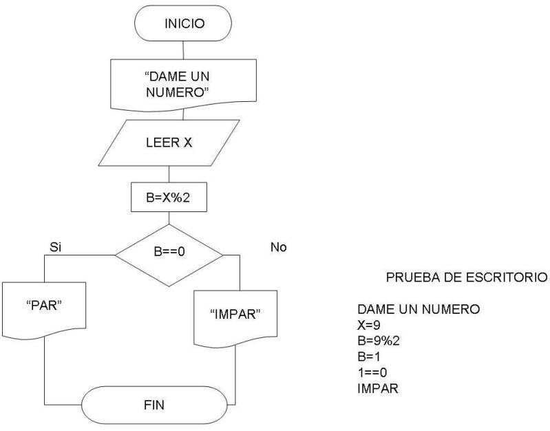

Fundamentos de programación JavaScript parte 2
Regresar al inicio
Algoritmos y Diagramas de Flujo

DOM
librosweb - ajax/capitulo_4 DOM
Eventos JS
librosweb - ajax/capitulo_6 EVENTOS
¿Cómo determinar si un número es par o impar?

Juguemos con la fecha
Temporizadores